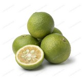

|  | Kabosu is a juicy citrus fruit closely related to yuzu. Its juice has the sharpness of lemon, and it is used instead of vinegar in some Japanese dishes. It grows on a flowering shrub or tree with sharp thorns. The fruit is harvested when still green, but if left to ripen it turns yellow. It is often confused with similar citrus such as sudachi, but can easily be distinguished by the apex of the fruit where the pistil has fallen off, which is a slightly swollen doughnut shape. Kabosu juice is rich in sourness, with a unique fragrance. It is used with sashimi, grilled fish, ponzu for hot pot, and as a vinegar alternative for Japanese dishes. In Ōita Prefecture it is also used with miso soup, noodles, and shōchū, by dripping the juice to add flavor. Squeezing vertically cut radial quarters with the peel side down prevents the seeds from entering the dish or cup while adding the flavor of the juice and peel. Kabosu juice is used in a wide range of products including condiments, juices, non-alcoholic beverages, frozen desserts, snack foods, wagashi, pastries, and alcoholic beverages. |